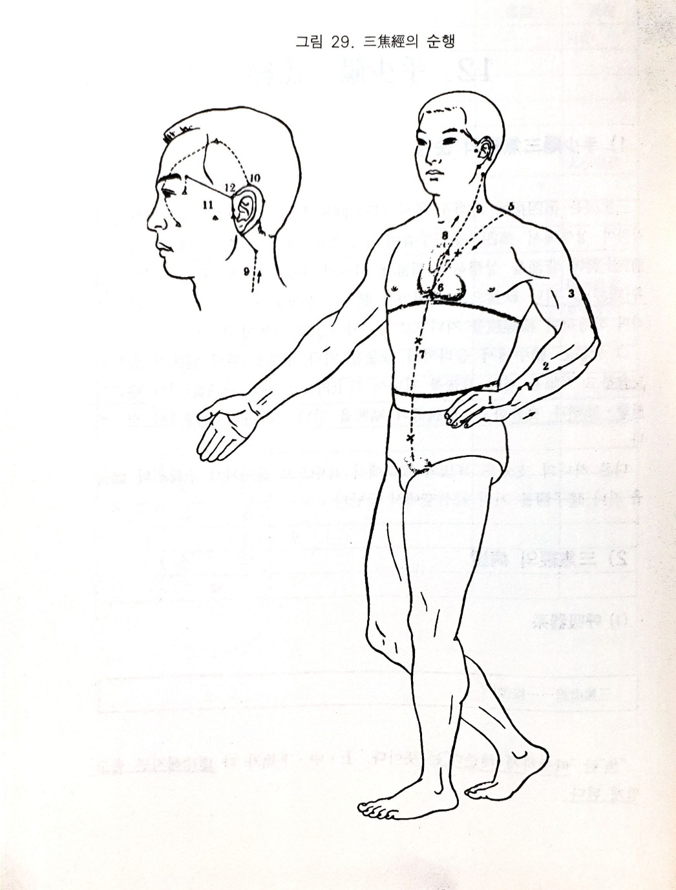

수소양삼초경
12. 수소양삼초경
1) 수소양삼초경의 순행
삼초경은 제4지에 가까운 쪽의 말단 관충에서 심포경의 지맥을 받아 시작하여 상행해서 제4. 제5수골의 중간으로 나와 수관절 배면에 이르러 전완상완의 배면을 상행하여 견부에 이르러 소장경의 예풍과 교회하고 견정(담경)을 지나 결분으로 들어가서 단중에 분포된다. 삼초경은 심포와 락하며 하행하여 횡경막을 지나므로 상. 중. 하의 삼초에 속한다.
그 분지는 단중에서 올라와서 결분을 지나 항부로 와서 독맥의 대추와 교회하고 천정을 거쳐 이후를 지나서 이상각으로 나와 각손을 지나 담경의 현리. 함연과 교회하고, 방광경의 청명을 지나 소장경의 관료에서 교회한다.
다른 하나의 지분은 이후의 예풍에서 이중으로 돌아와서 소장경의 청궁을 지나 동자료를 거쳐 사죽공에서 끝난다.
2) 삼초경의 병증
(1) 호흡기계
“초”란 “따뜻하게 해준다”는 뜻이다. 상. 중. 하초가 다 허냉해지면 춥고 떨리게 된다.
(2) 소화기계
삼초경은 견 - 결분혈 - 단중 - 상. 중. 하초에 이르므로 삼초를 따뜻하게 해준다. 또한 결독지궁으로 수도를 잘 소통시키는 역할을 하는데 만일 이 기능이 상실되면 수액대사와 온화작용이 원활하지 않아 설사하거나 혹은 변비가 생겨 배가 부르고 딴딴해지기도 한다.
(3) 흉협복통류
삼초경이 제4지 척측조갑근부에서 시작해서 완관절의 배면을 지나 전완. 상완으 배면을 상행하여 견부에 이르므로 제4지통. 전완상완의 외측통. 견비외측통 등이 발생한다. 허하면 무력해지고 실하면 구거하게 된다. 또한 삼초는 “결독지궁”으로 수도를 소통시키는 역할을 하기 때문에 본경이 병들면 피부에 허부나 수종이 발생하고 특히 아랫비가 붓는다.
(4) 안이비인후구계
삼초의 분지는 결분에서 항부로 올라와 이후를 지나 이전으로 나가 동자료 - 사죽공으로 이어진다. 따라서 그 경락이 병들면 인후부에 종통이 발생하거나 이전협통. 이후통. 이호. 이롱. 목예자통. 구갈 등의 증상이 발생한다.
(5) 비뇨기계
삼초경은 하초에 연락되어 방광으로 이어져 있고, 수분배설 작용을 하기 때문에 본 경이 병들면 소변을 보지 못하고 쩔쩔 매게 된다. 허증일 경우는 소변이 급히 마렵거나 밤에 오줌을 보거나 혹은 소변이 찔끔찔끔 나오는 증상이 발생한다.
(6) 기타
한액은 심이 주관한다. 심포경은 장이고 삼초는 부이므로 삼초가 병이 들면 한출 증상이 발생한다.

오수혈
관충(정,금)
넷째 손가락의 손톱뿌리부분 외측의 각진 곳에서 1푼 떨어진 곳이니 손가락 끝에서 옆쪽으로 밀어 올라가면 걸린는 곳이다. 입병, 혀. 눈 등의 염증에도 좋지만 인. 후. 편도선 등 목이 붓고 아픈 경우에 잘 듣는다. 기타 두통이나 팔에 이상이 있을 때에도 쓰여지나 관충은 정혈이기에 급증이나 극증시에 사혈하여 특효가 있음은 극혈의 효능과 유사하다.
액문(형,수)
넷째 손가락의 새끼손가락쪽 측면을 손끝에서 손등쪽으로 밀어가면 관절 조금 앞에서 뼈에 걸리는 곳이 혈자리로서 제4지 본절의 외측 전함중이 된다. 귀젖이 나오는 중이염이나 난청, 목이 아픈 경우, 두통. 치통 등에 진통. 소염. 발한작용이 있는 혈이다.
중저(수,목)
손바닥이나 손등 속에 있는 뼈를 그전에는 장골이라 하였으나 중수골이라 한다. 중저혈은 제4중수골의 바깥쪽을 손목쪽에서 손끝을 향하여 밀어가면 뼈에 걸리는 곳이 중저이며 일반표기에서 제4중수골 본관절의 외측 후함중이라 한다. 삼초경은 팔이나 목. 머리의 측면을 흐르고 있기 때문에 눈. 귀. 목. 팔의 측면통에 잘 듣게 되어 있고 뒷목이나 등뼈의 이상에 좋은 혈이다.
목혈이라면 삼초화경의 모격이 되니 삼초허증에 보하는 자리가 중저요 목은 측면 운동신경의 불안전한 풍증에 적격인 혈이다. 중저에서 손목쪽으로 밀어올라가서 뼈에 막히는 곳이 중국에서 개발했다는 요통치료점이기도 하다.
지구(경,화)
양지에서 팔꿈치 끝을 향하여 3촌부위이니 완골과 척골의 사이가 된다. 본혈은 오행학적으로 보면 화경의 화혈로서 삼초경의 주격인 혈이므로 삼초경을 움직인다든가 타경과의 조절에 중요한 자리이며 심장. 정신에 관한 질환, 열성질환에 해열발한이 되고 몸살이 났을 경우에도 좋은 자리이다.
천정(합,토)
손바닥을 반대편 가슴에 대고 팔꿈치 끝에서 조금 윗쪽(1촌)을 만져보면 손끝이 들어갈만한 함중이 혈이다. 천정은 화경의 토혈로서 삼초의 실증에 사하는혈이요 삼초나 비위의 이상으로 거기서 생기는 지랄병이나 광증 등 뇌신경질환에 잘 들으며 귀나 치아. 어깨. 팔 등의 이상에는 1촌이상의 상사자가 좋으며 오행혈 특히 합혈로서의 활용이 좋은 곳이다.